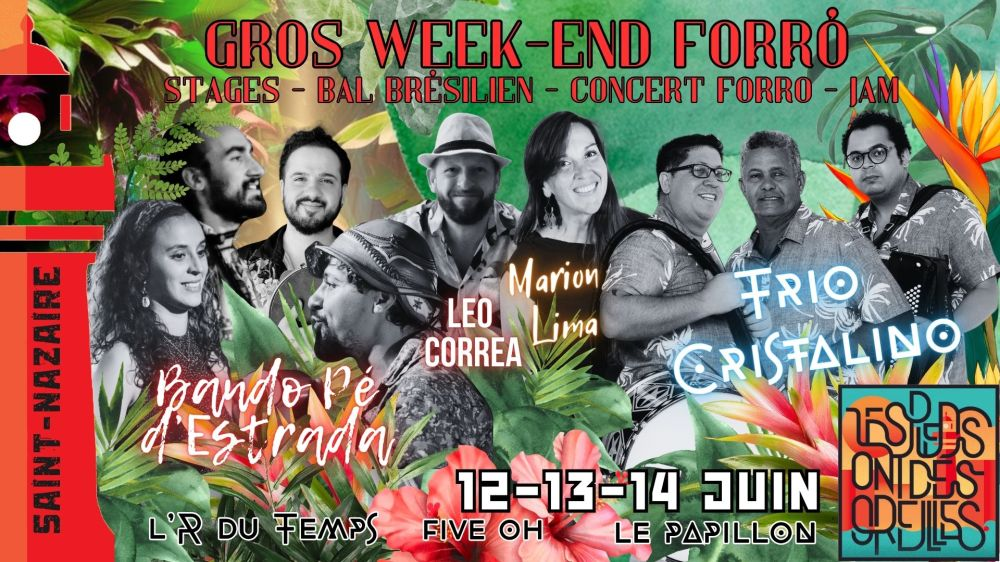

Gros Week-end Forró avec Cristalino et Pé d’estrada

🌴🔥 GROS WEEK-END FORRÓ 2026 🔥🌴
À l’occasion de leur tournée européenne en juin, nous aurons le plaisir d’accueillir 🪗TRIO CRISTALINO ainsi que 🥁BANDO PÉ D’ESTRADA, deux groupes brésiliens sensationnels qui feront vibrer le Vieux Continent 🌵
On aura aussi la chance d’accueillir la boss internationale du forró : MARION LIMA💃, prête à remettre un peu d’ordre (et beaucoup de style) dans notre danse , ainsi que LEO CORRÊA🎻 , qui prendra les commandes du stage de musique et de la jam session… où, entre nous, les musiciens de Cristalino et de Pé d’Estrada viendront sûrement mettre le feu 🤩🔥
Et tout ça à Saint-Nazaire… préparez-vous pour notre 🌵🔥 GROS WEEK-END FORRÓ 2026 🔥🌴
TRIO CRISTALINO: https://www.youtube.com/watch?v=Fway19PkQtI&list=PL2fmJP7BhhNSMaFIDlmRjAdP3CZlH0kjD
PE D’ESTRADA: https://www.youtube.com/watch?v=2jRnhlDGRmY
MARION LIMA: https://www.instagram.com/marionpbp/
LEO CORRÊA: https://www.instagram.com/leodcorrea/
🥁 LE PROGRAMME 🥁
Pour les détails du programme des stages, c’est ici
VENDREDI 🌴
👉 19h – 20h30: Apéro / Restauration – R du temps 🌵
👉 20h30 – 1h: bal forró/concert Pé d’Estrada – R du temps 🌴
Initiation: 20h45. Concert: 21h30.
SAMEDI 🌵
👉 10h30 – 12h: Stage de danse du nordeste – cavalo marinho et autres danses 🕺💃 🌵
Dirigé par Yann Cabôco (de Pé d’estrada)
A la guinguette Five-oh ou espace civique Dubé (en cas de pluie)
👉 11h30 – 14h: brunch/déjeuner à la guinguette du Skate-Park – Five-oh 🍳
BAIÃO DE DOIS (maison) (sur réservation ⚠️)
boissons et frites en vente sur place 🌴
👉 Stages de danse forró 🕺💃 🌵
Dirigés par Marion Lima – espace civique Dubé
★ 14h – 15h30: niveau 1 🌴
★ 15h30 – 17h: niveau 2 🌵
★ 17h – 18h30: niveau 3 🌴
🥁 16h30 – 18h30: stage de percussions et chant de Nordeste 🌵
Dirigé par Léo Corrêa. Tous niveaux – Salle Dolto
👉 19h – 20h30: Apéro / petite restauration – R du temps 🌴
👉 20h30 – 1h: Concert Trio Cristalino et bal forró – R du temps 🌵
Initiation: 20h45. Concert: 21h30.
DIMANCHE 🌴
👉 11h30 – 14h: brunch/déjeuner à la guinguette du Skate-Park – Five-Oh 🍳
BOBO DE CAMARÃO (sur réservation ⚠️) 🌵
★14h – 16h: stage de danse forró tous niveaux – espace civique Dubé 💃
👉 16h – 18h: temps libre – plage 🏖️ 🌴
👉 18h – 21h: apéro forró / jam session – Plage de Villès-Martin – Bar le Papillon 🌵
Pour les détails du programme des stages, c’est ici
🙌 VOUS VOULEZ NOUS AIDER ? 🌴
On cherche des bénévoles 🌵 (et on récompense 😏)
On cherche aussi un PHOTOGRAPHE 📸 (fullpass offert)
📍 LES LIEUX
L’R du temps:
6 Rue François Marceau
https://maps.app.goo.gl/7KaVRa2zTmZY5NEPA
Five-oh
Bd Albert 1er
https://maps.app.goo.gl/kqK2jaPEEdzqa7Np7
Le Papillon
Plage de Villès-Martin
94 Bd Albert 1er, 44600 Saint-Nazaire
https://maps.app.goo.gl/Zp11JZXTqjBwj8kB8?g_st=ic
Espace civique Dubé
1 Rue des Ajoncs, 44600 Saint-Nazaire
https://maps.app.goo.gl/MUL1t8wH3xaYSBvL9
Salle Dolto
60 rue Albert Schweitzer 44600 Saint Nazaire
https://maps.app.goo.gl/iQvdSHTCaoWmrCBj7
Et la plage 🏖️ 🌴
🚲 Location de vélo (à la gare sncf) 🚲
C’est super pratique à Saint-Nazaire.
https://www.yceo-mobilite.fr/mes-titres-et-tarifs/velyceo-courte-duree/#commentcourte
🛋️ DORMIR SUR PLACE 🌵
Couchsurfing possible
Auberge du Poulpe (22€/lit)
https://www.facebook.com/cemeapaysdelaloire/posts/700418359196741
🚗 COVOIT 🌵
https://docs.google.com/spreadsheets/d/18pup31706aoBu_PXvhgpxJNuN4yYGhuRcLZrT8erUIk/edit?usp=sharing
☎️ CONTACT
07 63 47 55 85 / 06 60 40 15 17
lespiedsontdesoreilles@gmail.com
STAGES: LES DETAILS
⭐🐓 Initiation aux danses traditionnelles du Nordeste brésilien Par Yann Caboco (Pé d’estrada)
Cet atelier vous propose de découvrir les pas de base de plusieurs danses emblématiques du Nord-Est du Brésil.
Au programme, une brève découverte du coco, de la ciranda et un plongeon dans l’univers du cavalo-marinho.
Un moment ludique, dansant et convivial à partager ensemble !
Atelier musique du nordeste – percussions et chants: Par Léo Corrêa
Cet atelier propose une immersion dans les rythmes du Nordeste du Brésil, tels que le bumba meu boi maranhense, le Caboclinho et le coco de roda.
Basé sur la transmission orale et ouvert à tous les niveaux, le travail développe des notions de pulsation, tempo et dynamique à travers des exercices corporels simples, comme les frappes de mains et les mouvements.
L’apprentissage se fait par l’écoute, la répétition et la variation rythmique, avec des dynamiques collectives favorisant l’interaction et la construction de groupe.
Des instruments traditionnels et alternatifs sont utilisés, pour une pratique accessible qui intègre musique et mouvement.
Plus qu’un apprentissage des rythmes, il s’agit d’une expérience collective, sensible et ancrée dans les traditions culturelles brésiliennes
Stages de forró de Marion Lima
⭐🥚Niveau 1 – Jouer avec les bases pour mieux interpréter la musique
Les pas et figures de base sont une véritable boîte à outils pour dialoguer avec la musique. Lors de ce stage, nous explorerons comment utiliser la variété des bases du forró pour enrichir son interprétation musicale et sortir d’une danse mécanique.
Nous travaillerons notamment à partir de tours simples pour guides et guidé·es, ainsi que de différentes variations de pas de base permettant de modifier le rythme des pieds. L’objectif sera de comprendre comment ces éléments fondamentaux peuvent être utilisés au bon moment pour souligner les nuances de la musique, créer du contraste et développer une danse plus expressive.
Parce qu’avant de chercher la complexité, il y a déjà énormément à raconter avec les bases !
⭐🐥 Niveau 2 – Une conversation à trois : toi, moi… et la musique !
La danse est un dialogue. Mais dans le forró, cette conversation ne se limite pas aux deux partenaires : la musique, l’espace du bal, les autres danseurs et la piste participent eux aussi à l’échange.
Dans ce stage, nous explorerons comment créer davantage d’écoute et d’interaction dans le couple grâce à différents outils de guidage : caminhadas, guidages ouverts, fermés, par la taille, guidages collés ou décollés, ainsi que des tours et contre-tours simples, guidés ou lâchés. Nous observerons comment ces différents choix influencent l’espace de conversation entre les partenaires et leur capacité à dialoguer avec la musique.
Une attention particulière sera portée au rôle actif des guidé·es afin que les deux partenaires puissent s’adapter ensemble aux propositions musicales. Car au fond, danser, c’est interpréter : écouter, répondre, proposer et construire ensemble.
⭐🐓Niveau 3 – Jouer avec les dynamiques du corps : en harmonie ou à contre-pied de la musique
Pour ce stage, une bonne maîtrise du rythme dans les pieds est indispensable. À partir de cette base solide, nous travaillerons les dynamiques corporelles qui permettent d’enrichir l’interprétation musicale : accélérations, ralentissements, variations de vitesse, changements de niveaux et contrastes dans le mouvement.
Nous nous appuierons notamment sur le piao, les demi-tours accélérés de type facão ainsi que la base du balanço pour comprendre les mécanismes en jeu. Nous aborderons également l’axe, le cadre et les postures, éléments essentiels pour développer ces variations corporelles avec précision.
L’objectif sera d’apprendre à choisir consciemment son interprétation : être en parfaite symbiose avec le rythme de la musique ou, au contraire, créer volontairement un contrepoint maîtrisé. Comment ralentir le corps sur une musique lente ? Comment accélérer un mouvement tout en conservant la pulsation dans les pieds ? Autant d’outils qui ouvrent de nouvelles sensations et de nouvelles possibilités d’expression dans la danse.
⭐🐓 Stage de dimanche:
Sous l’appellation “Forró” se trouve une variété de rythmes et de sensations!! Mytho (zabumbeiro) sera avec nous pour mettre en évidence ce que fait la zabumba et ce que cela peut créer dans nos corps!!!
Pendant ces 2h, nous prendrons le temps de sentir dans nos corps ce que cela fait danser : un baiao, un xote, un xaxado, ou encore un forró ou un arrastapé!!!
L’unique pré-requis de ce stage est d’avoir quelques pas de base! Tout le monde est le bienvenu!!
Attention il ne s’agit pas d’une conférence sur les rythmes, l’idée est bien de sentir les différences en dansant!!!
🌴 Até logo
Vidéos
Les vidéos sont hébergées par YouTube. Elles ne se chargent, et YouTube n'est contacté, qu'au moment où vous cliquez sur lecture.